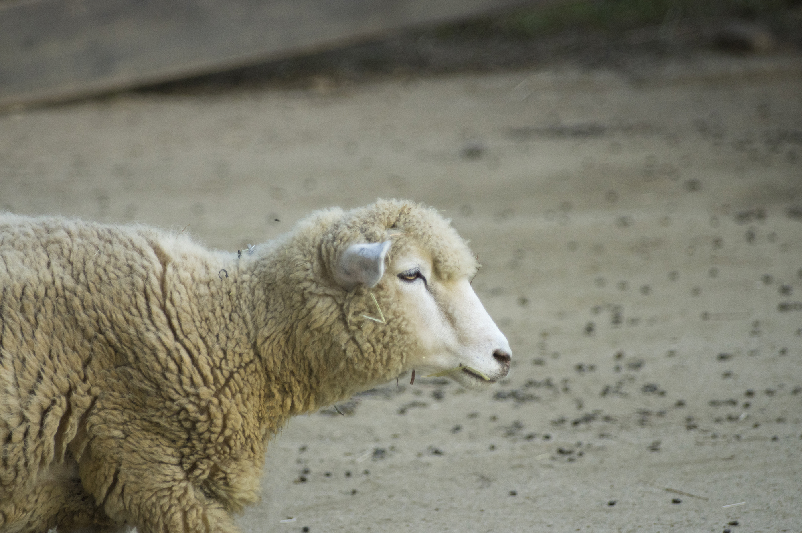

羊について
About Sheep

羊毛として使用される羊
紀元前からの歴史
Wikipediaより引用
出典：Wikipediaの羊の記事
ヒツジ
（羊、綿羊、学名 Ovis aries）
ウシ科ヤギ亜科の鯨偶蹄目である。
角を持ち、主に羊毛のために家畜化されている。
分類
綱 : 哺乳綱 Mammalia
目 : 鯨偶蹄目 Artiodactyla
亜目 : ウシ亜目 Ruminantia
科 : ウシ科 Bovidae
亜科 : ヤギ亜科 Caprinae
属 : ヒツジ属 Ovis
種 : ヒツジ O. aries
形態
螺旋を描いて伸びるラセン角（ハンガリーのラツカ羊ハンガリー語:Racka）
渦巻き状のアモン角(フィニッシュ・ランドレース種(en))
ヒツジは反芻動物としては比較的体は小さく、側頭部のらせん形の角と、羊毛と呼ばれる縮れた毛をもつ。
原始的な品種では、短い尾など、野生種の特徴を残すものもある。
生態
草だけでなく、樹皮や木の芽、花も食べる。食草の採食特性は幅広いとされる。
ヒツジの聴力はよい。また視力については、水平に細い瞳孔を持ち、優れた周辺視野をもつ。視野は 270–320°で、頭を動かさずに自分の背後を見ることができる。しかし、奥行きはあまり知覚できず、影や地面のくぼみにひるんで先に進まなくなることがある。
暗いところから明るいところに移動したがる傾向がある。